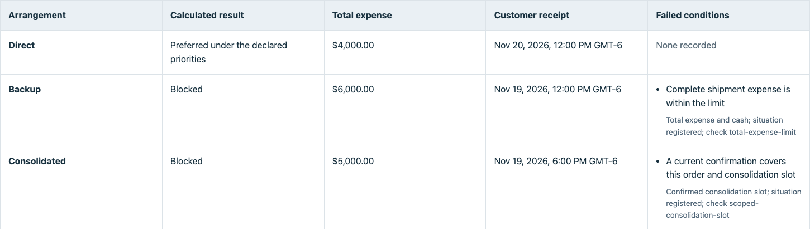

Maya’s team has a shipment review it can reuse. In the previous article, they added Consolidated freight and made its loading-slot confirmation an explicit requirement. With a current confirmation, it offers an earlier arrival within the $5,000 expense limit.
Now Maya has proposals for several shipments, and revised purchase orders arrive alongside fresh quote and confirmation exports. Launch still wants the goods early. Finance expects the expense limit to hold. Operations needs each proposal to be supported by records for the order it will actually ship.
Before the reservation cutoff, Maya needs to know which recommendations still stand, which have changed and which shipments need someone’s attention. Repeating the review shipment by shipment would mean bringing information from several systems together each time.
A supplier’s developer builds a small integration around the existing Decision Lab CLI. It reads company exports, prepares each shipment’s inputs, runs the same published review and gives Maya one exception report.
Maya, the orders and the records are fictional. The scenario uses four independent shipments and the public shipment-exceptions sample code. The excerpts below link to their full source files. Sources and scope are at the end.
A shared reference: refresh, compare, review.
- Company systems and developerPrepare the current facts.Match exports to retained cases and preserve each supporting record’s actual scope.
- CLI and company scriptRepeat the review.Calculate each shipment, compare its earlier result and prepare the team’s report.
- Maya and responsible ownersResolve the exceptions.Review changed proposals, obtain missing records and authorize the operational work.
The CLI lets the company embed the same reasoning in its own process. The surrounding script handles the company’s file formats, repeated execution and report layout. The published app still supplies the shipment requirements and priorities.
Give Maya one exception list.
The earlier review preferred Consolidated at $5,000, arriving Thursday, November 19 at 6 p.m. for all four shipments. Each has an independent allocation of people and resources, a $5,000 expense limit and a $6,500 cash limit.
The refreshed records produce four different outcomes:
| Shipment | What changed | Current result | Maya’s next review |
|---|---|---|---|
| SHIP-104 | No relevant change in the supplied records | Consolidated remains preferred: $5,000, Thursday at 6 p.m. | Confirm the records remain current before operational handoff. |
| SHIP-105 | Order revision 2 has current registration and permissions; the consolidation confirmation still covers revision 1 | Direct becomes preferred: $4,000, Friday, November 20 at noon. | Review the changed proposal or obtain a confirmation for the current order and slot. |
| SHIP-106 | Order revision 2 has current registration, but its permissions cover the previous revision | No listed arrangement passes the recorded permission requirements. | Obtain the appropriate current authorizations or revise the available arrangements. |
| SHIP-107 | A quote specifies EUR; this integration supports USD | Input correction required. No new assessment is produced. | Correct the source information before treating any proposal as current. |
A blocked shipment has a calculated result about the recorded arrangements. An import error means the script could not prepare a supported case for calculation. Maya needs those outcomes kept separate.
The two supplied snapshots deliberately use the same review time: Tuesday, November 17, 2026 at 8 a.m., UTC−06:00, with a noon reservation cutoff. This isolates changes in the records. The quote prices also stay fixed. In a live process, the exports must supply the actual current review time.
Bring company exports into a complete case.
The developer starts with three complete current snapshots:
orders.csv: current order IDs and revisions, quantities, destinations, limits, deadlines and responsible owners.quotes.csv: the complete current quote for each shipment arrangement, including its scope, expense, departure and travel time.slot-confirmations.csv: the current resolved slot records, with the order revision, arrangement, shipping location and validity actually recorded.
The order export shows SHIP-105 and SHIP-106 at revision 2, while SHIP-104 remains at revision 1. These CSV excerpts show selected columns and rows from the full files.
shipment_id,order_id,order_revision,quantity,currency,expense_limit
SHIP-104,ORD-104,1,100,USD,5000.00
SHIP-105,ORD-105,2,100,USD,5000.00
SHIP-106,ORD-106,2,100,USD,5000.00The importer checks the declared columns before mapping the rows. Amounts need a supported currency and precision; timestamps need an explicit UTC offset. Duplicate or contradictory current records become diagnostics instead of silently replacing one another.
The quote export includes the three options for SHIP-105 and a EUR-denominated quote for SHIP-107. That currency mismatch needs attention before SHIP-107 can be assessed.
shipment_id,order_id,order_revision,arrangement,currency,total_cost
SHIP-105,ORD-105,2,direct,USD,4000.00
SHIP-105,ORD-105,2,backup,USD,6000.00
SHIP-105,ORD-105,2,consolidated,USD,5000.00
SHIP-107,ORD-107,1,direct,EUR,4000.00 const snapshots = await Promise.all(specs.map(async ([name, columns]) => {
const csv = parseCsv(await readSource(path.join(inputDir, name)), { source: name });
checkColumns(csv, columns, name);
return csv.rows;
}));
const [orders, quotes, slots] = snapshots;Those exports supplement a retained case for each shipment. The retained case supplies the other facts needed by the complete review: people, resources, calendars, registration records and scoped permissions. Three new CSV files do not establish all of those conditions.
Quotes and confirmations are complete snapshots of the fields this adapter owns. A missing confirmation leaves no confirmation available. An order absent from the current export receives no current assessment; its absence does not approve or cancel it.
An order revision does not renew its evidence.
SHIP-105, representing order ORD-105, is now revision 2. Its retained case explicitly supplies registration and authorizations for that revision. Its slot export, however, still contains a confirmation for revision 1. The importer preserves that old revision.
shipment_id,order_id,order_revision,arrangement,slot_reference,status
SHIP-104,ORD-104,1,consolidated,SLOT-C104,confirmed
SHIP-105,ORD-105,1,consolidated,SLOT-C105,confirmed
SHIP-106,ORD-106,1,consolidated,SLOT-C106,confirmedThe slot’s status is confirmed, but its order_revision is still 1. A confirmed slot for the old order does not establish that the changed order has a slot.
Changing the confirmation’s revision number to match the new order would manufacture supporting evidence. The same applies to an authorization: changing the purchase order does not grant permission to act on its replacement.
The preparation code starts from a copy of the retained case and replaces only the fields owned by these exports. It preserves the supporting evidence and permissions:
if (!job.errors.length) {
// Only the stated dynamic fields are replaced. Keep original evidence and
// permissions byte-for-byte in value, including their old revision IDs.
job.caseData = structuredClone(retainedCase);
job.caseData.parameters = { ...job.caseData.parameters, ...parameters };
job.caseData.tables.arrangements = arrangements;
job.caseData.tables.slotConfirmations = slotConfirmations;
}This is why SHIP-105 and SHIP-106 differ. The first has independently supplied current permissions, so Direct can still pass. The second retains permissions for the old revision, so none of its listed arrangements passes. The script does not create the missing authority.
Keep the shipment review consistent.
The integration uses shipment-review-with-consolidation, release 1: the same fixed app package used in the interactive follow-up. Its requirements and earliest-arrival priority stay intact. Direct costs $4,000, Backup costs $6,000 and Consolidated costs $5,000.
The script checks the package identity, binds each prepared case to it and invokes CLI case validation before running the assessment. The execution arguments identify the app, the case and the complete report output:
const args = ['run', '--app', appFile, '--case', caseFile, '--reports', 'all', '--locale', 'en-US',
'--timeout-ms', String(options.timeoutMs ?? 30000), '--max-output-bytes', '50000000',
'--run-id', `batch-${job.shipmentId}`, '--created-at', createdAt, '--output', path.join(directory, 'run.json')];
if (options.maxPlans !== undefined) args.push('--max-plans', String(options.maxPlans));
const evaluated = await invokeCLI(args, transcript);invokeCLI calls the public runCLI entry point from @decision-lab/cli, using the same arguments as the decision-lab executable. It retains the exit code and diagnostics along with the calculation. The script supplies no separate shipment evaluator.
The batch reassesses every supplied order. The earlier manifest supplies the comparison basis; it is not a cache that skips unchanged shipments. A baseline using different app rules is rejected rather than presented as an equivalent comparison.
If a calculation is incomplete or unavailable, the report keeps that distinction. It does not relabel an unfinished calculation as “no arrangement passes.”
Put the differences in the team’s working format.
The company script compares the current calculated proposal with its retained predecessor. It checks the preferred arrangements, their expenses and arrival times, preserving ties.
A changed recommendation needs review. So does a changed condition even when the preferred arrangement keeps the same name:
function classify(current, before, changes) {
if (!current?.available) return 'unavailable';
if (current.status === 'blocked') return 'blocked';
if (!before?.available) return 'new';
if (!isDeepStrictEqual(preferredSignature(current), preferredSignature(before))) return 'recommendation-changed';
return changes.length ? 'conditions-changed' : 'unchanged';
}The developer then renders an HTML report for Maya and a CSV for the logistics team’s spreadsheet. These are company-specific report adapters built around the CLI’s complete report data:
await writeFile(path.join(stage, 'manifest.json'), json(manifest));
await writeFile(path.join(stage, 'shipments.html'), renderHTML(rows, metadata));
await writeFile(path.join(stage, 'shipments.csv'), renderCSV(rows, metadata));For calculated shipments, the report links to source receipts, canonical inputs, validation and the full CLI calculation. Import failures retain their available source diagnostics. Maya can start with the exception list and inspect the basis for a particular proposal without asking a developer to interpret the whole batch.


“Unchanged” means the comparison found no changed calculated recommendation or inputs. It is not an approval, and it does not establish that the source records are true. Every calculated row still awaits human review.
Explore the full implementation.
The shipment-exceptions repository directory contains the complete application, sample exports, retained cases, app package and tests. The selected excerpts above link to the version verified for this article.
Follow how the importer preserves source scope, how the fixed app assesses each shipment and how the reporting layer turns the results into Maya’s working list. The full files include the surrounding validation and error handling.
Give the exceptions back to their owners.
Maya no longer has to treat every revised order as the same problem. SHIP-104 needs a current-record review. SHIP-105 needs a decision about Direct or a renewed consolidation confirmation. SHIP-106 needs current authority. SHIP-107 needs a corrected source quote before a new proposal can be assessed.
The developer has brought the review into the company’s data flow and reporting format. Maya and the responsible owners still review the findings, obtain the necessary authorizations and arrange the shipments.
Each shipment here is assessed independently using its own recorded resource allocation. Individually passing shipments do not establish that the whole group can share a truck, dock, worker or cash pool. A combined allocation decision needs a model that represents those shared demands.
Use Decision Lab to review a shipment interactively. Use the CLI to bring the same review into your company’s data flows, recurring checks and custom reports.